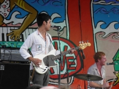

Siren Music Festival
I have this idea in my head that Coney Island is a dinky little place, full of dilapidated carnival rides and bereft of any enjoyment aside from nostalgic remembrances of what family entertainment meant before the birth of the Disney Corporation. There is apparently much more happening on the peninsula than I was aware. Very popular beaches, a small yet respectable amusement park, the boardwalk, and of course the original Nathans, would all make a pretty decent reason to take the train out for the day. But throw in a day of free music, and I can't think of many things that would keep me away.
The Village Voice has been doing the Siren Festival now for ten years. It's seen countless fantastic bands over its tenure, and this year proved no different. With the now defunct All Points West only a distant memory, the Northeast has no major festival comparable to the big three: California's Coachella, Illinois's Lollapalooza, and Tennessee's Bonnaroo. While Coney Island may not compare to the large open fields and high profile acts of the big multi-day festivals, it is a welcome reprieve for any New Yorker who can barely remember what a festival even is. It also helps that the line-up this year is very impressive. Throw in the fact that its completely free, and its only about an hour from Manhattan, and I can think of few things that would have stopped me going. I did my best to snap photos during each set, but I am by no means a photographer, and I often found my self more concerned with finding a decent place in the pit than getting good shots.
Screaming Females
I only caught the tail end of the New Jersey punk trio. And as if I hadn't learned anything from their last record, singer and guitarist Marissa Paternoster can shred. Even though they played early in the day and the crowds had not yet reached their future heights, Screaming Females popularity was apparent, and their crowd dwarfed that of the simultaneously playing Wye Oak. I was disappointed that I hadn't arrived earlier because from what I gleaned, ignoring brevity, rocked pretty damn hard.
Ponytail
Perhaps I'm a bit biased, as I happen to adore this band, but their set killed. Some ingenious audience member realized that although the stage had been blocked off with a fence to enclose the press pit, and presumably to separate the crowd, a solitary parking meter located perfectly in front of the barricade would completely undermine security's intentions. The fast paced art rock made for perfect dance music, and the crowd willingly obliged in spite of the scorching sun. Singer Molly Siegel's fiercest scowl will melt your heart. She dances around stage, emitting a plethora of sounds, some of which sound like they belong on a death metal record, others make less sense than the lyrics to “Smells Like Teen Spirit”. Her sock stuffed crotch might also make you do a double take. Noise rock might not always be particularly conducive to the type of heat that makes you want to retreat to the nearest glimmer of shade, but the post-Halloween sugar-rush energy that they deliver kept my eyes glued to the stage.
Earl Greyhound
 I had a guy with a leopard spotted mohawk turn to me to express his adoration during their set - maybe not your expected fan base for music that owes more to Howlin' Wolf than Johnny Rotten. I had never even heard of them play before but I found myself compelled to buy their CD, which is a big deal for a guy that would be in a bit of trouble if the government ever got their hands on his iTunes library. Bassist Kamara Thomas has an aura on stage. She looks and sounds like she should be playing alongside Sly Stone (sorry Larry Graham). Coupled with guitarist Matt Whyte's impressive chops, the pair weave together two-part harmonies and electric licks that blew me, and my ear drums, away.
I had a guy with a leopard spotted mohawk turn to me to express his adoration during their set - maybe not your expected fan base for music that owes more to Howlin' Wolf than Johnny Rotten. I had never even heard of them play before but I found myself compelled to buy their CD, which is a big deal for a guy that would be in a bit of trouble if the government ever got their hands on his iTunes library. Bassist Kamara Thomas has an aura on stage. She looks and sounds like she should be playing alongside Sly Stone (sorry Larry Graham). Coupled with guitarist Matt Whyte's impressive chops, the pair weave together two-part harmonies and electric licks that blew me, and my ear drums, away.
Harlem
“Security couldn't do very much if you guys decided to push over whatever this thing is and storm the stage.” And with that little piece of advice from Michael Coomers, a half dozen security guards forcefully held back the fence from the ensuing surge from the crowd, intent on following through on the suggestions of the band. “Woodstock '99!”, proclaimed Curtis O'Mara, much to the chagrin of the few guys tasked with stopping crowd surfing. For anyone unaware of the mayhem (and pyromania, and violence, and sexual assault) that ensued at that 30th anniversary festival, it's just about every promoter's worst nightmare. The ever-annoying press pit thwarted any hope of stage diving, but a miraculously placed and incredibly beautiful parking meter allowed for anyone willing to risk a fractured skull to leap onto the hands of the crowd to their hearts content. And as for their set, sure it was a bit sloppy, but we're talking Harlem. If you're looking for progressive rock-level skills, you're in the wrong place. If catchy garage tunes be your thing, you - like everyone else in attendance - would have been pleased.
Cymbals Eat Guitars
 I don't have much to say about this set. I found Why There Are Mountains a bit long winded, and their set no different. After a few minutes I got distracted with a fellow festival-goer by a conversation on how many identical sounding Jazzmaster guitars they had brought along with them. And the Hazy Sea went over well, I'll admit they had me singing all the “Woaaahhhs” along with them, but the energy that Harlem had willed into existence died a pretty pitiful death.
I don't have much to say about this set. I found Why There Are Mountains a bit long winded, and their set no different. After a few minutes I got distracted with a fellow festival-goer by a conversation on how many identical sounding Jazzmaster guitars they had brought along with them. And the Hazy Sea went over well, I'll admit they had me singing all the “Woaaahhhs” along with them, but the energy that Harlem had willed into existence died a pretty pitiful death.
Matt & Kim
I was very disappointed by what happened next. The crowds from both stages mobbed the Main Stage as Ted Leo and the Pharmacists played, in expectance of the dance-punk duo. By the time I got over there, I couldn't make it within a few hundred yards of the actual music without being halted by the solid mass of bodies in front of me. I caught the lovable duo last summer for free on pier 61, and although I wasn't particularly blown away by the album, I will gladly see them play anytime. There's something infectious about the sheer joy that bleeds into their live set, and maybe you find their loving affection repulsive, but it makes for a damn good show. “I'm running into the ocean after the show!”, Matt announced much to the joy of the three dozen adoring fans that followed him and they closed with the undeniably catchy Daylight.
I probably could have caught Holy Fuck, but I thought it better to grab a train and nurse the sunburn I had received on only the right side of my body from the horrible perpendicularly placed sun.
23 August, 2010 - 19:48 — Baxter Lehman